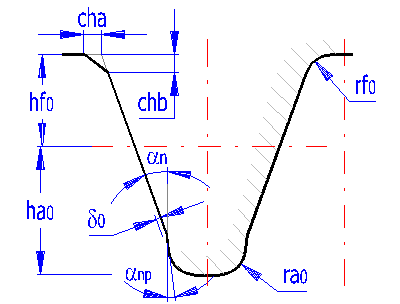

📥 Phần Đầu Vào (Input Section)
Mục 1.0 đến Mục 5.0 (Thông Số Truyền Động, Vật Liệu, Dụng Cụ Cắt, Mô Đun & Dịch Chỉnh)
1.0 Nhập Các Thông Số Truyền Động Cơ Bản (Options of basic input parameters)
▶| # | Thông Số Tính Toán | Ký Hiệu | Bánh Dẫn (Pinion 1) | Bánh Bị Dẫn (Gear 2) | Đơn Vị |
|---|---|---|---|---|---|
| 1.1 | Công suất truyền động | Pw | 99.050 | kW | |
| 1.2 | Tốc độ quay (Pinion / Gear) | n | 395.8 | v/ph | |
| 1.3 | Mô-men xoắn xoay danh nghĩa (Torsional moment) | Mk | 955.00 | 2389.72 | N.m |
| 1.4 | Tỉ số truyền yêu cầu / dãy tiêu chuẩn | i |
|
- | - |
| 1.5 | Tỉ số truyền thực tế / Độ lệch tỉ số truyền | i / Δ | 2.526 | 1.04% | - / % |
3.0 Dụng Cụ Cắt & Biên Dạng Răng Cơ Sở (Parameters of cutting tool and basic rack)
▶| # | Thông Số Tính Toán | Ký Hiệu | Bánh Dẫn (Pinion 1) | Bánh Bị Dẫn (Gear 2) | Đơn Vị |
|---|---|---|---|---|---|
| 3.1 | Dụng cụ cắt tiêu chuẩn (Standardized tool) | - | - | ||
| 3.2 | Hệ số chiều cao đỉnh dao cắt (Addendum of tool) | ha0* | [modul] | ||
| 3.3 | Hệ số chiều cao đáy dao cắt (Dedendum of tool) | hf0* | [modul] | ||
| 3.4 | Bán kính góc lượn đỉnh dao (Fillet radius of tool) | ra0* | [modul] | ||
| 3.5 | Bán kính lượn chân dao (Root fillet radius of tool) | rf0* | [modul] | ||
| 3.6 | Góc vát chân răng a (Chamfer of root) | cha* | [modul] | ||
| 3.7 | Góc vát chân răng b (Chamfer of root) | chb* | [modul] | ||
| 3.8 | Chiều cao phần lồi (Protuberance height) | d0* | [modul] | ||
| 3.9 | Góc lồi (Protuberance angle) | αnp | [°] | ||
| 3.10 | Khe hở hướng tâm đỉnh răng tối thiểu (Min. unit head clearance) | ca* min | 0.2438 | 0.2438 | [modul] |
| 3.11 | Hệ số khe hở hướng tâm đỉnh răng (Unit head clearance) | ca* | [modul] | ||
4.0 Thiết Kế Mô Đun & Hình Học Ăn Khớp (Module design and toothing geometry)
▼| # | Thông Số Tính Toán | Ký Hiệu | Bánh Dẫn (Pinion 1) | Bánh Bị Dẫn (Gear 2) | Đơn Vị |
|---|---|---|---|---|---|
| 4.1 | Số răng của bánh răng (Number of teeth) | z | - | ||
| 4.2 | Góc ăn khớp danh nghĩa (Normal pressure angle) | α |
|
- | độ (°) |
| 4.3 | Góc nghiêng răng cơ sở (Base helix angle) | β |
|
- | độ (°) |
| 4.6 | Mô đun pháp tuyến / Tiêu chuẩn DIN 780 | mn |
|
6.000 | mm |
| 4.7 | Đường kính vòng chia tham chiếu (Reference diameter) | d | 114.00 | 288.00 | mm |
| 4.9 | Chiều rộng vành răng (Face width) | b | mm | ||
| 4.10 | Chiều rộng làm việc chung (Working face width) | bw | 117.00 | mm | |
| 4.12 | Khoảng cách trục làm việc (Working center distance) | aw | 201.000 | mm | |
| 4.13 | Khối lượng xấp xỉ của bộ truyền | m | 68.748 | kg | |
| 4.14 | Khe hở cạnh răng pháp tuyến (Normal backlash) | - | |||
| 4.15 | - Giá trị nhỏ nhất / lớn nhất khuyến nghị (Recommended min. | max.) | jn min / max | 0.085 | 0.340 | mm |
| 4.16 | - Khe hở cạnh răng pháp tuyến được chọn (Selected normal backlash) | jn / jtw | 0.0000 (jtw) | mm | |
| 4.17 | - Hiệu chỉnh khoảng cách trục do khe hở (Centre distance mod.) | Δaj | 0.0000 | mm | |
5.0 Dịch Chỉnh Biên Dạng Răng (Addendum modification / Profile shift)
▼| # | Thông Số Tính Toán | Ký Hiệu | Bánh Dẫn (Pinion 1) | Bánh Bị Dẫn (Gear 2) | Đơn Vị |
|---|---|---|---|---|---|
| 5.2 | Giới hạn dịch chỉnh chống cắt chân răng cho phép | xmin (undercut) | -0.263 | -0.708 | - |
| 5.3 | Giới hạn dịch chỉnh triệt tiêu cắt chân răng hoàn toàn | xmin (no cut) | -0.105 | -0.646 | - |
| 5.4 | Giới hạn dịch chỉnh chống nhọn đỉnh răng (sa* >= 0.25) | xmax (tapering) | 0.194 | -1.683 | - |
| 5.5 | Thanh trượt điều chỉnh hệ số dịch chỉnh x1 | Slider x1 | - | ||
| 5.6 | Hệ số dịch chỉnh biên dạng (Profile shift coefficient) | x | - | ||
| 5.7 | Tổng hệ số dịch chỉnh biên dạng / Giới hạn nhỏ nhất | Σx / min | 0.0000 | > -1.372 | - |
| 5.8 | Hệ số trùng khớp ngang / Hệ số trùng khớp tổng | εα / εγ | 1.6456 | 1.6456 | - |
| 5.9 | Chiều dày răng không thứ nguyên trên đỉnh răng | sa* | 0.6886 | 0.7729 | - |
| 5.10 | Hệ số trượt riêng tại chân răng | JA1 / JE2 | -5.3758 | -1.3551 | - |
| 5.11 | Hệ số trượt riêng tại đỉnh răng | JE1 / JA2 | 0.5754 | 0.8432 | - |
| 5.12 | Tổng trị tuyệt đối các hệ số trượt riêng | Sum|J| | 8.1494 | - | |
📊 Phần Kết Quả Tính Toán (Results Section)
Mục 6.0 đến Mục 8.0 (Kích Thước Cơ Bản, Thông Số Bổ Sung & Chất Lượng Ăn Khớp)
6.0 Kích Thước Hình Học Cơ Bản (Basic dimensions of gearing)
▼| # | Thông Số Tính Toán | Ký Hiệu | Bánh Dẫn (Pinion 1) | Bánh Bị Dẫn (Gear 2) | Đơn Vị |
|---|---|---|---|---|---|
| 6.1 | Số răng bánh dẫn và bánh bị dẫn | z | 19 | 48 | - |
| 6.2 | Chiều rộng vành răng | b | 120.00 | 117.00 | mm |
| 6.3 | Mô đun pháp tuyến danh nghĩa | mn | 6.0000 | mm | |
| 6.4 | Mô đun mặt mút (Transverse module) | mt | 6.0000 | mm | |
| 6.5 | Bước răng danh nghĩa theo vòng chia (Circular pitch) | p | 18.8496 | mm | |
| 6.6 | Bước răng mặt mút (Transverse circular pitch) | pt | 18.8496 | mm | |
| 6.7 | Bước răng vòng cơ sở (Base circular pitch) | ptb | 17.7128 | mm | |
| 6.8 | Khoảng cách trục lý thuyết không dịch chỉnh | a | 201.0000 | mm | |
| 6.9 | Khoảng cách trục chế tạo | av | 201.0000 | mm | |
| 6.10 | Khoảng cách trục làm việc thực tế | aw | 201.0000 | mm | |
| 6.11 | Góc áp lực danh nghĩa | α | 20.0000 | độ | |
| 6.12 | Góc áp lực mặt mút | αt | 20.0000 | độ | |
| 6.13 | Góc ăn khớp làm việc pháp tuyến | αwn | 20.0000 | độ | |
| 6.14 | Góc ăn khớp làm việc mặt mút | αwt | 20.0000 | độ | |
| 6.15 | Góc xoắn răng danh nghĩa | β | 0.0000 | độ | |
| 6.16 | Góc xoắn răng vòng cơ sở | βb | 0.0000 | độ | |
| 6.17 | Đường kính đỉnh răng (Tip diameter) | da | 126.0000 | 300.0000 | mm |
| 6.18 | Đường kính vòng chia tham chiếu (Reference diameter) | d | 114.0000 | 288.0000 | mm |
| 6.19 | Đường kính vòng cơ sở (Base diameter) | db | 107.1250 | 270.6315 | mm |
| 6.20 | Đường kính chân răng (Root diameter) | df | 99.0000 | 273.0000 | mm |
| 6.21 | Đường kính lăn làm việc (Operating pitch diameter) | dw | 114.0000 | 288.0000 | mm |
| 6.22 | Chiều cao đỉnh răng (Addendum) | ha | 6.0000 | 6.0000 | mm |
| 6.23 | Chiều cao chân răng (Dedendum) | hf | 7.5000 | 7.5000 | mm |
| 6.24 | Chiều dày răng trên đường kính đỉnh (pháp tuyến) | sna | 4.1314 | 4.6375 | mm |
| 6.25 | Chiều dày răng trên đường kính đỉnh (mặt mút) | sta | 4.1314 | 4.6375 | mm |
| 6.26 | Chiều dày răng trên vòng chia (pháp tuyến) | sn | 9.4248 | 9.4248 | mm |
| 6.27 | Chiều dày răng trên vòng chia (mặt mút) | st | 9.4248 | 9.4248 | mm |
| 6.28 | Chiều dày răng trên vòng cơ sở | sb | 9.6602 | 13.0028 | mm |
| 6.29 | Chiều dày đỉnh răng không thứ nguyên | sa* | 0.6886 | 0.7729 | - |
| 6.30 | Hệ số dịch chỉnh khoảng cách trục | Δy | 0.0000 | - | |
| 6.31 | Tổng hệ số dịch chỉnh biên dạng | x1 + x2 | 0.0000 | - | |
| 6.32 | Hệ số dịch chỉnh biên dạng từng bánh | x | 0.0000 | 0.0000 | - |
7.0 Thông Số Hình Học Bổ Sung (Supplemental parameters of gearing)
▶| # | Thông Số Tính Toán | Ký Hiệu | Bánh Dẫn (Pinion 1) | Bánh Bị Dẫn (Gear 2) | Đơn Vị |
|---|---|---|---|---|---|
| 7.1 | Số răng thực tế | z | 19 | 48 | - |
| 7.2 | Số răng tương đương của bánh răng nghiêng | zn | 19.000 | 48.000 | - |
| 7.3 | Số răng nhỏ nhất (chấp nhận cắt chân răng nhỏ) | zmin1 | 14 | 14 | - |
| 7.4 | Số răng nhỏ nhất (không bị cắt chân răng) | zmin2 | 17 | 17 | - |
| 7.5 | Số răng nhỏ nhất (không bị nhọn đầu răng) | zmin3 | 22 | 22 | - |
8.0 Chỉ Số Chất Lượng Ăn Khớp & Kích Thước Bánh Răng (Qualitative indices)
▶| # | Thông Số Tính Toán | Ký Hiệu | Bánh Dẫn (Pinion 1) | Bánh Bị Dẫn (Gear 2) | Đơn Vị |
|---|---|---|---|---|---|
| 8.1 | Hệ số trùng khớp ngang / Hệ số trùng khớp dọc | εα / εβ | 1.6456 | 0.0000 | - |
| 8.2 | Hệ số trùng khớp tổng (Total contact ratio) | εγ | 1.6456 | - | |
| 8.4 | Đường kính trục khuyến nghị nhỏ nhất | Ds min | 56.60 | 76.90 | mm |
| 8.5 | Đường kính ngoài moay-ơ nhỏ nhất | Dh min | 74.60 | 94.90 | mm |
| 8.6 | Đường kính trục lớn nhất cho phép | Ds max | 87.00 | 261.00 | mm |
| 8.11 | Chiều dày vành răng (Gear rim thickness) | sR | 49.50 | 136.50 | mm |
| 8.12 | Chiều dày nan hoa / vách đĩa bánh răng | bs | 120.00 | 117.00 | mm |
| 8.13 | Khối lượng từng bánh răng (Gear weight) | m | 9.388 | 59.361 | kg |
| 8.18 | Vận tốc vòng trên đường kính chia / Giới hạn vận tốc | v / vmax | 5.97 | < 15 | m/s |
| 8.19 | Lực tiếp tuyến riêng trên một đơn vị chiều dài răng | wt | 143.20 | 150.57 | N/mm |
| 8.22 | Tổng khối lượng bộ truyền bánh răng | m (total) | 68.7483 | kg | |
| 8.23 | Hiệu suất bộ truyền bánh răng | η | 99.05% | % | |
🛠️ Phần Bổ Sung & Đo Kiểm Chế Tạo (Additions & Manufacturing)
Mục 11.0, 14.0, 17.0, 18.0 (Kích Thước Đo W/M, Dung Sai ISO 1328 & Chế Tạo)
11.0 Kích Thước Đo Kiểm W, M & Dung Sai ISO 1328 (Inspection & ISO 1328 Tolerances)
▼| # | Thông Số Tính Toán | Ký Hiệu | Bánh Dẫn (Pinion 1) | Bánh Bị Dẫn (Gear 2) | Đơn Vị |
|---|---|---|---|---|---|
| 11.1 | Kích thước đo kiểm bộ truyền bánh răng (Check dimensions of gearing) | ||||
| 11.2 | Số răng đo pháp tuyến chung khuyến nghị (Number of measured teeth - rec.) | zw (rec) | 3 | 6 | |
| 11.3 | Số răng đo pháp tuyến chung áp dụng (Number of measured teeth - applied) | zw | răng | ||
| 11.4 | Chiều dài pháp tuyến chung (Base tangent length) | W | 45.8786 | 101.4539 | mm |
| 11.5 | Đường kính con lăn / bi đo khuyến nghị (Pin/Ball diameter - rec.) | dt (rec) | 10.5000 | 10.5000 | |
| 11.6 | Đường kính con lăn / bi đo áp dụng (Pin/Ball diameter - applied) | dt | mm | ||
| 11.7 | Kích thước đo qua con lăn/bi (Dimension over pins/balls) | M | 128.3642 | 303.0482 | mm |
| 11.8 | Thiết kế bộ truyền theo kích thước đo yêu cầu W và M (GoalSeek x1, Σx) | ||||
| 11.9 | Khoảng biến thiên cho phép của W (Permissible range of W) | W min/max | 44.8 / 52.03 | 98.5 / 107.6 | mm |
| 11.10 | Kích thước pháp tuyến chung yêu cầu (Requested chordal dimension) | W req |
|
|
mm |
| 11.11 | Khoảng biến thiên cho phép của M (Permissible range of M) | M min/max | 125.7 / 140.5 | 294.6 / 317.4 | mm |
| 11.12 | Kích thước qua con lăn/bi yêu cầu (Requested dimension over pins/balls) | M req |
|
|
mm |
| 11.13 | Hệ thống cấp chính xác ISO 1328 - Phần 1 (ISO 1328 System of accuracy - Part 1) | ||||
| 11.14 | Cấp chính xác chế tạo (Accuracy grade) | Q | |||
| 11.15 | Mô đun danh nghĩa (Normal module) | mn | 6.000 | mm | |
| 11.16 | Đường kính chia danh nghĩa (Reference diameter) | d | 114.000 | 288.000 | mm |
| 11.17 | Bề rộng vành răng (Face width) | b | 120.000 | 117.000 | mm |
| 11.18 | Tổng hệ số trùng khớp (Total contact ratio) | εγ | 1.6456 | - | |
| 11.19 | Dung sai bước răng đơn (Single pitch deviation) | fpt | 9.0 | 11.0 | µm |
| 11.20 | Số răng cho dung sai bước tích lũy k (Number of teeth for cumulative pitch dev) | k | 2 | 2 | - |
| 11.21 | Dung sai bước tích lũy k răng (Cumulative pitch deviation) | Fpk | 18.0 | 20.0 | µm |
| 11.22 | Tổng dung sai bước tích lũy (Total cumulative pitch deviation) | Fp | 28.0 | 47.0 | µm |
| 11.23 | Tổng dung sai biên dạng (Total profile deviation) | Fα | 13.0 | 17.0 | µm |
| 11.24 | Tổng dung sai hướng răng (Total helix deviation) | Fβ | 17.0 | 18.0 | µm |
| 11.25 | Sai lệch tiếp xúc ăn khớp đơn tiếp tuyến (Tooth-to-tooth tangential composite) | f'i | 20.0 | 23.0 | µm |
| 11.26 | Tổng sai lệch tiếp xúc ăn khớp tiếp tuyến (Total tangential composite deviation) | F'i | 47.0 | 70.0 | µm |
| 11.27 | Sai lệch dạng biên dạng (Profile form deviation) | ffα | 10.0 | 13.0 | µm |
| 11.28 | Sai lệch độ nghiêng biên dạng (Profile slope deviation) | fHα | 8.5 | 11.0 | µm |
| 11.29 | Sai lệch dạng hướng răng (Helix form deviation) | ffβ | 12.0 | 13.0 | µm |
| 11.30 | Sai lệch độ nghiêng hướng răng (Helix slope deviation) | fHβ | 12.0 | 13.0 | µm |
| 11.31 | Hệ thống cấp chính xác ISO 1328 - Phần 2 (ISO 1328 System of accuracy - Part 2) | ||||
| 11.32 | Sai lệch tiếp xúc ăn khớp đơn hướng tâm (Tooth-to-tooth radial composite dev.) | f''i | 22.0 | 22.0 | µm |
| 11.33 | Tổng sai lệch tiếp xúc ăn khớp hướng tâm (Total radial composite deviation) | F''i | 44.0 | 60.0 | µm |
| 11.34 | Dung sai độ đảo hướng tâm vành răng (Run out tolerance) | Fr | 22.0 | 38.0 | µm |
16.0 Xuất Bản Vẽ Đồ Họa, Hệ Thống CAD & Bảng Chế Tạo (Graphic Output, CAD Systems & DXFTables)
▶
🖥️ 16.1 Chọn Hệ Thống CAD Mục Tiêu (CAD System Selection)
| 16.1 | Xuất bản vẽ 2D sang (2D drawing output to): | |||
| 16.2 | Tỉ lệ bản vẽ 2D (2D Drawing scale): | |||
| 16.3 | Chi tiết bản vẽ hiển thị (Detail): | |||
| 16.7 | Bảng thông số chế tạo CAD (Table of parameters): | |||

💾 Xuất Tệp DXF 2D AC1009 (Release 12 Universal):
Tương thích AutoCAD, SolidWorks, Inventor, ZWCAD
18.0 Bảng Thông Số Chế Tạo Bánh Răng (Manufacturing parameters)
▶| # | Thông Số Chế Tạo | Ký Hiệu | Bánh Dẫn (Pinion 1) | Bánh Bị Dẫn (Gear 2) | Đơn Vị |
|---|---|---|---|---|---|
| 18.1 | Mô đun danh nghĩa | mn | 6.0000 | mm | |
| 18.2 | Số răng | z | 19 | 48 | - |
| 18.3 | Góc ăn khớp danh nghĩa | α | 20.0000 | độ | |
| 18.4 | Góc xoắn răng danh nghĩa | β | 0.0000 | độ | |
| 18.5 | Đường kính vòng chia | d | 114.0000 | 288.0000 | mm |
| 18.6 | Đường kính đỉnh răng | da | 126.0000 | 300.0000 | mm |
| 18.7 | Đường kính chân răng | df | 99.0000 | 273.0000 | mm |
| 18.8 | Hệ số dịch chỉnh biên dạng | x | 0.0000 | 0.0000 | - |
| 18.9 | Chiều dài pháp tuyến chung | W | 45.8786 | 101.4539 | mm |
| 18.10 | Cấp chính xác chế tạo | Q | ISO 1328 Cấp 6 | - | |
20.0 Đồ Họa, Hệ Thống CAD & Bảng Tọa Độ Điểm Răng (Graphical output, CAD & Coordinates)
▶| # | Thông Số Đồ Họa & Hệ Thống CAD | Ký Hiệu | Bánh Dẫn (Pinion 1) | Bánh Bị Dẫn (Gear 2) | Đơn Vị | Thao Tác |
|---|---|---|---|---|---|---|
| 20.1 | Xuất bản vẽ 2D / Mô hình 3D sang: | CAD | - | |||
| 20.5 | Số răng hiển thị vẽ chi tiết | z_draw | răng | (4 răng hoặc toàn bộ z) | ||
| 20.6 | Số điểm trên cung đỉnh răng | NoPtHead | điểm | Chuẩn MITCalc: 20 | ||
| 20.7 | Số điểm thân khai & lượn chân răng | NoPtEv | điểm | Chuẩn MITCalc: 100 | ||
| 20.8 | Bước góc xoay lăn của dao thanh răng | Δψ | độ (°) | Chuẩn MITCalc: 0.5° | ||
| 20.C | Bảng 120 điểm tọa độ biên dạng răng (Sheet Coordinates) | TPRF | Đạt chuẩn Zero-Tolerance (Δ = 0.000000 mm) | 120 pts | ||
🔄 Mô Phỏng Ăn Khớp 2D / 3D CAD
Biên dạng thân khai chính xác, góc lượn chân răng chuẩn R = 0.38*mn. Bấm 3D WebGL để quan sát ăn khớp không gian và xuất file CAD cho Mastercam/SolidWorks.
1.0x